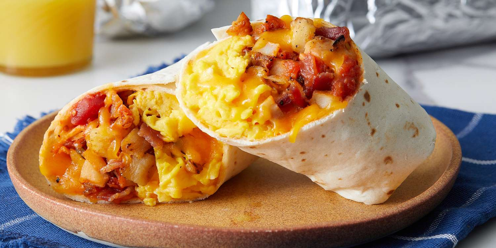

Breakfast Burrito Recipe

*Disclaimer: burritos may not look like image*
Serving Size: 4
Preparation Time: 10 minutes
Cook Time: 20 minutes
Total Time: 30 minutes
Ingredients
- 1 tablespoon cooking oil
- 2 tablespoons butter
- 4 flour tortillas
- 4 eggs
- 4 pieces of bacon or sausage if preferred
- 2 potatoes
- 1/2 cup cheese
- Salt and pepper
- Optional: Salsa and sour cream
Directions
- Poke holes in the potatoes with a fork and microwave for
4 minutes. Start heating up two pans on medium heat,
one for the bacon and one for the potatoes.
- Cube the potatoes and add them to the pan with the cooking
oil. Add bacon to the other pan and cook as you normally would.
Flip potatoes after 4-5 minutes. Continue flipping until each
side of the cubed potatoes are golden brown. Once potatoes are almost
done season with salt and pepper to taste. Remove bacon and
potatoes once cooked to desired doneness.
- While potatoes and bacon are cooking start a third pan on medium heat,
and whisk the eggs in a bowl. Add the butter to the heated pan.
Once butter is melted add the eggs and stir occasionally. Season eggs
with salt and pepper to taste. Remove eggs from pan once cooked to
desired doneness.
- Layout tortilla on plate. Add cheese, a slice of bacon, ¼ of
your potatoes, and ¼ of your eggs to the tortilla. Top with salsa
and/or sour cream if desired. You may also use your favorite sauce
if preferred.
- Once tortilla is filled with ingredients roll the tortilla burrito style.
If you don't know how to roll a burrito
Click here to learn how!
- Once burrito is rolled place it back into the potato pan to get the sides golden brown
and crispy. Once sides are browned, remove burrito from heat and ENJOY!
Repeat steps 4-6 for more burritos!
Contact me at:
My email: tv123108@umconnect.umt.edu
University of Montana
32 Campus Dr
Missoula, MT 59812